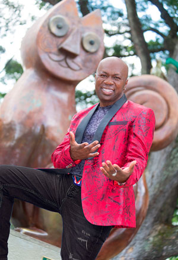

Orquesta La Fuga
Por: Katherine Castiblanco
Más de 20 años de carrera, un sentimiento.
 @OrquestaLaFuga
@OrquestaLaFuga Orquesta La Fuga
Orquesta La FugaBajo el sol único de medio día, “Galleta”, Sebas y Richy alistaban su mejor pose en el Parque de Los Gatos en “La sucursal del cielo”, junto a Paulito Cajigas, nuestro fotógrafo, quién guiaba a los responsables de poner a bailar salsa a toda Colombia; mientras sonreían y se burlaban uno del otro, nos contaban del proyecto con el que le rinden un homenaje al folclor Vallenato a ritmo de Salsa.
Hace unos meses iniciaron con la canción de Felipe Peláez, padrino del proyecto, –El amor más grande del planeta-, el muy bien aceptado tema les permitió soñar y darse cuenta de los corazones que están conquistando en Colombia, y los que van a conquistar en el mundo entero: ¡todos los amantes de la Salsa y el Vallenato!
Edinson Vivanco Torres, más conocido como “Galleta”, es el creador de esta loca idea que va teniendo frutos. Como si fuera poco, es el “duro” de La Fuga, el que tiene las ideas y las pone a rodar junto con su equipo de trabajo, y quien ha disfrutado de más de 11 galardones obtenidos en diferentes países, que los catalogan como la Mejor Orquesta Internacional del Año y como Mejor Producción Musical con el Álbum Contra Viento y Marea.
|  | ||
|---|---|---|
| SEBASTIÁN ANDRADE 22 Años | RICKY RODRÍGUEZ 34 Años | EDINSON VIVANCO TORRES “GALLETA” 17 agosto 1986 (Risas) |
Vallenato, a ritmo de Salsa, sin perder la esencia de ningún género; acierto musical gracias a una orquesta conformada por 14 integrantes, que tras días arduos de trabajo y largos ensayos lograron, el 31 de agosto del presente año, un lanzamiento inolvidable para medios en un sitio lleno de sonrisas, música, sueños y, por supuesto, baile, liderado por el mejor coreógrafo de todos: el de Jennifer López y La Fuga, El Mulato, el hombre perfeccionista que logró cautivar a toda una ciudad con sus pasos y volteretas.
El lanzamiento de este trabajo contó con la participación del dominicano Francky Desi, un joven salsero, conocido en su país por el tributo que le hizo al cantante Marc Anthony y por su canción –Me va a pesar-, tema que ha tenido gran aceptación en República Dominicana y que espera posicionarse en Colombia.
Pero no solo Francky Desi acompañó a La Fuga en la grabación del DVD, también estuvo la mexicana María Fernanda, cantante de La Sonora Santanera, quien con su vestido rojo, su belleza arrolladora y su vozarrón, cautivó a todo el público caleño.

{kind=link}
{kind=link}
“Tenemos el honor de presentarle al público un homenaje al Folclor Vallenato; ‘Un sentimiento’, producción musical que consta de 10 temas musicales que elegimos para que todos se lo disfruten y se lo gocen. Contiene grandes éxitos como -Malo-, -Obsesión-, -4 rosas-, -Volver-, -Olvídala-, -Señora-, entre otros”, explica Richy.
Vienen grandes giras para La Fuga en Estados Unidos, México, Ecuador y Colombia, donde presentarán este nuevo trabajo musical junto con sus éxitos mundiales.
El DVD, que se grabó en Cali en “El mulato“, bajo la dirección de baile de “El Mulato“, saldrá al público en el mes de noviembre. Esperamos con ansias este trabajo para tenerlo en casa, cantarlo a viva voz y dedicarlo completico, además, tendremos tiempo para aprendernos la canción objetivo de La Feria de Cali, –Malo-, canción que seguramente será un éxito rotundo en el 2019.
Desde 1991 Orquesta La Fuga se ha ido posicionando no solo en Colombia sino en países como España, Italia, Suiza, Holanda, México, entre otros, y seguirá trabajando para conquistar todos los continentes con su música salsera y con su talento para convertir éxitos vallenatos en obras de arte.